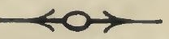

Kashmir Series of Texts and Studies.
No. XXVIII.
THE
TANTRALOKA
OF
ABHINAVA GUPTA
With Commentary by
RĀJĀNAKA JAYARATHA.
Edited with notes by
ANDIT MADHUSUDAN KAUL, SHASTRI, M. A., M. O. L.,
Superintendent of the Research Department,
JAMMU AND KASHMIR STATE,
SRINAGAR.

Published under the authority of the Government.of
His Highness. Lieut-General Maharaja
SIR PRATAP SINGH SAHIB BAHADUR,
G. C. S. I., G. C. I. E., K. G. C. B. E., LL. D.,
Maharaja of Jammu and Kashmir State.
VOLUME II.
BOMBAY:
'Printed at the Shri Venkateshvar Steam Press.
1921